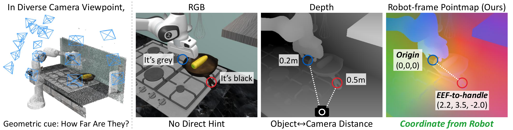
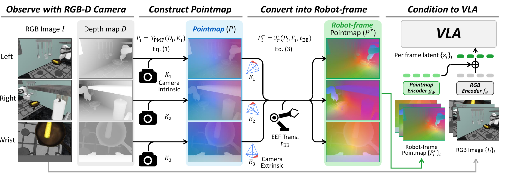
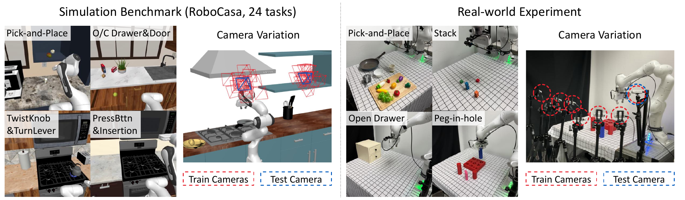
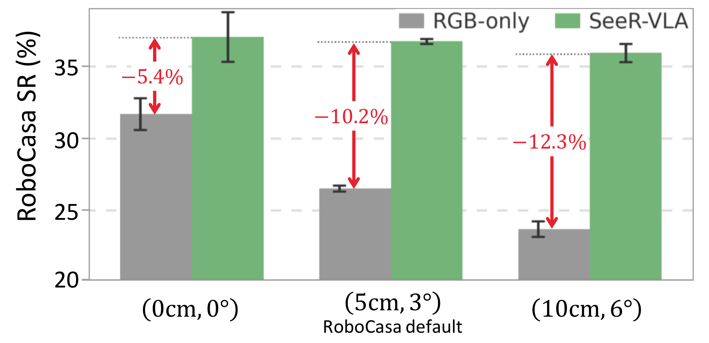
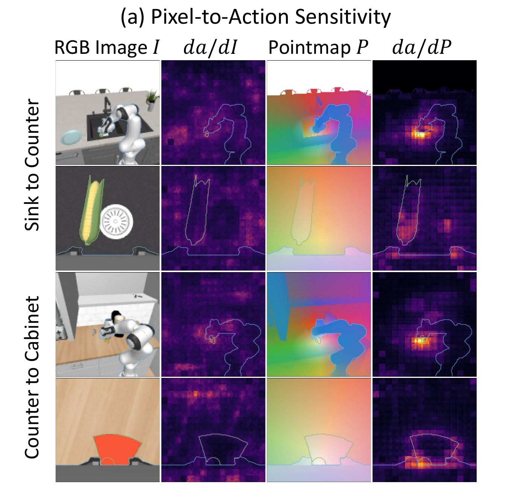
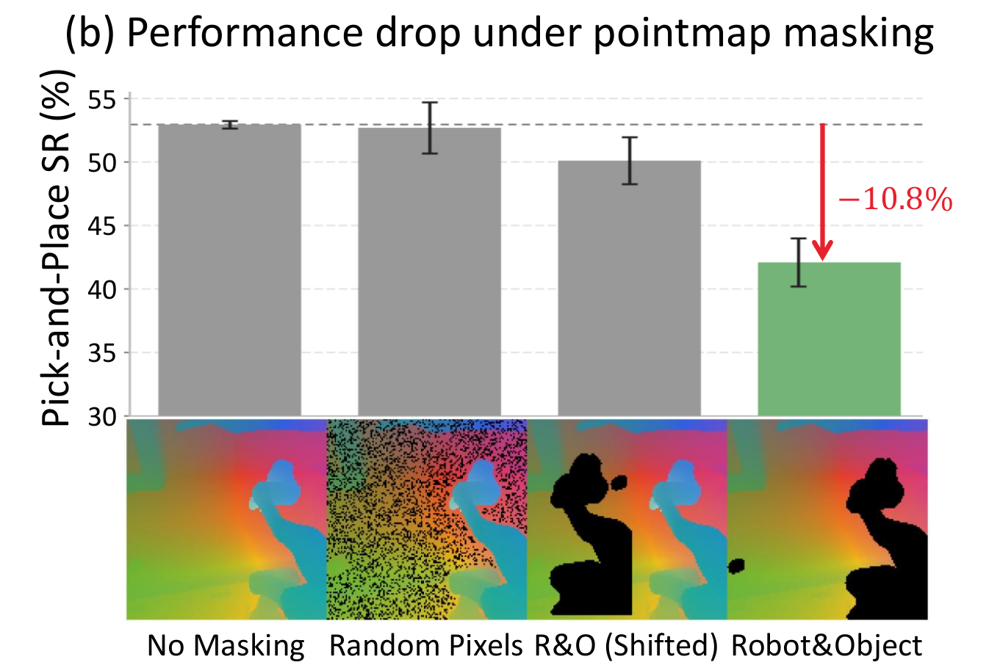

Give a VLA each pixel's 3D position relative to the gripper.
Keep the coordinate axes aligned with the robot base.
Motivation
Manipulation requires the target position relative to the end effector. RGB leaves this 3D relationship implicit. Depth measures distance from the camera.

Back-projecting depth with camera intrinsics gives each pixel a 3D position. Keeping these positions on the same dense image grid as RGB produces a pointmap. Expressing them in robot coordinates makes a visible scene point's coordinates independent of camera placement. Centering them at the gripper directly exposes the geometry of the interaction.
Solution
SeeR-VLA augments a pretrained VLA with an image-aligned H × W × 3 pointmap for each view. We lift depth into 3D and transform the points into the robot base frame. We then subtract the current end-effector position. This changes the origin while preserving the robot-base axis directions.

- Dense geometry. Keep a 3D coordinate at each valid RGB pixel.
- A common robot reference. Express all views in the same robot coordinate frame.
- Aligned feature fusion. Add matching RGB and pointmap features without adding tokens.
Coordinate Frame
Pointmaps make 3D geometry explicit. Where we place the origin and how we orient the axes also matter. These two examples show why we center coordinates at the gripper while keeping their directions fixed to the robot base.
Similar grasps share similar coordinates. An EE origin keeps the grasp region near zero across five objects and locations. White indicates coordinates near zero. A base origin gives it different coordinates depending on where the interaction happens.
originEnd-effector
origin (ours)
Move the origin without rotating the axes. EE-aligned axes turn with the wrist. This changes coordinates even for static scene points. Robot-base axes keep coordinate directions consistent.
| Origin | Axis orientation | Success rate |
|---|---|---|
| Robot base | Robot base | 34.4 ± 1.3 |
| Robot base | End effector | 33.4 ± 1.4 |
| End effector | End effector | 34.9 ± 1.1 |
| End effector | Robot base (ours) | 36.8 ± 0.2 |
Results
We evaluate on 24 RoboCasa tasks and four real-world tasks using pretrained π0.5. SeeR-VLA improves average success over RGB-only policies by 6.4 percentage points in simulation and 32.5 points on the real robot.
RGB-only π0.5 → SeeR-VLA
+6.4 points over RGB and +3.5 over PointVLA.
RGB-only π0.5 → SeeR-VLA
+32.5 points over RGB and +23.7 over PointVLA.

| Method | RoboCasa Average | Real robot | ||||
|---|---|---|---|---|---|---|
| Pick & place | Stack | Open drawer | Peg in hole | Average | ||
| FP3 | 42.9 ± 0.7 | 25.0 | 15.0 | 80.0 | 55.0 | 43.8 |
| π0.5 | 55.1 ± 0.3 | 50.0 | 15.0 | 65.0 | 20.0 | 37.5 |
| + KYC | 55.8 ± 3.9 | — | — | — | — | — |
| + OC-VLA | 57.4 ± 1.1 | 60.0 | 25.0 | 75.0 | 20.0 | 45.0 |
| + GeoVLA | 57.4 ± 1.4 | — | — | — | — | — |
| + PointVLA | 58.0 ± 0.7 | 45.0 | 30.0 | 75.0 | 35.0 | 46.3 |
| + SeeR-VLA (ours) | 61.5 ± 1.2 | 75.0 | 55.0 | 85.0 | 65.0 | 70.0 |
VLA baselines are reimplemented on π0.5. FP3 uses its DROID-pretrained checkpoint.
Real-World Robot Demos
Five evaluation examples per task. All clips play at real time.
Ablation Studies
Controlled comparisons examine how to represent 3D geometry and how to combine it with RGB. These studies use pretrained VLM weights without robot-action pretraining. The coordinate frame is fixed to the robot base.
1Provide Explicit 3D Coordinates
Depth and Plücker rays together provide the information needed to recover robot-frame geometry. Constructing pointmaps explicitly improves success from 31.7% to 34.4%.
| Geometric input | Fusion | Success rate (%) |
|---|---|---|
| RGB only | — | 25.6 ± 1.3 |
| Depth | Addition | 29.6 ± 1.1 |
| Plücker rays | Addition | 29.3 ± 0.9 |
| Depth + Plücker rays | Addition | 31.7 ± 0.3 |
| Point cloud | Addition | 31.4 ± 1.5 |
| Pointmap | Addition | 34.4 ± 1.3 |
The point-cloud variant uses a pretrained point-cloud encoder and aligns its features to RGB patches. Its lower score supports the pointmap design.
2Add Features at Corresponding Image Locations
Separate encoders preserve each modality's representation. Adding their spatially aligned features performs best and keeps the number of visual tokens unchanged.
| Pointmap and RGB fusion | Success rate (%) |
|---|---|
| Token concatenation | 30.3 ± 0.6 |
| Channel concatenation | 31.6 ± 1.4 |
| Element-wise addition | 34.4 ± 1.3 |
Analysis
1Viewpoint Diversity
The advantage over RGB-only policies grows as training camera placements become more varied. The pointmaps express geometry in a common robot reference even as its appearance changes across viewpoints.

2What the Policy Uses

(a) Where Do Inputs Affect the Action?
Brighter regions indicate where small input changes have a larger effect on predicted motion.
Pointmap sensitivity concentrates around the target object. RGB sensitivity is more broadly distributed.
The policy is sensitive to task-relevant 3D geometry.

(b) What Happens When Geometry Is Removed?
We mask the robot and target object in the pointmap while keeping RGB unchanged.
Masking the same number of random or shifted pixels has much less impact.
The policy uses the robot and target object's geometry to act.
BibTeX
@article{lee2026seelikearobot,
title = {See like a Robot: Robot-Centric Pointmaps for VLA Models},
author = {Lee, Byungkun and Hwang, Dongyoon and Kim, Dongjin and
Lee, Hojoon and Kim, Hyunseung and Choo, Jaegul and Park, Minho},
journal = {arXiv preprint arXiv:2607.11498},
year = {2026},
eprint = {2607.11498},
archivePrefix = {arXiv},
primaryClass = {cs.RO},
url = {https://arxiv.org/abs/2607.11498v2}
}